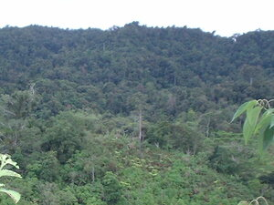

puwalas 
/pualas/
n.
“forest”
n.
forest
Wrd.Gloss: forest
Makepal pad ne puwalas diyè te bubungan te Kasalumayahan, ulu te Dumalegdeg ne weyig.
There's a thick forest there in the mountain of Kasalumayahan which is the head [source] of the Dumalegdeg river.
Eng. forest; jungle; bush
Tag. gúbat
Ceb. kagulángan; lasang
Ilo.: bákir
OCM: Ethnogeography (823), Flora (137)
DDP: Forest, grassland, desert (1.2.1.6)
Online dict status: -
Usage level: B
v.
for someone (egpamuwalas, agent, eg><ø-pA-) to clear a forested area in order to make a kaingin or field (egpamuwalasen, range, eg><en-pA-) in the forest (egpamuwalasen, location, eg><an-pA-)
Eng. fell forest; kaingin, make a; clearing, make a; field, make a; harvest forest
Online dict status: -
Usage level: R
n.
(mammuwalas, mA1-rdpC-) kaingiroes
Eng. kaingiroes
Online dict status: -
Usage level: R
Updated by: RJH,JUN,QDL,NJK,QDL,RJH
Last updated: 28/May/2013
"puwalas" in text "Ka kalibutan"
"puwalas" in song "Mateles si Hisus"
"puwalas" in song "Mabantug ka"
"puwalas" in song "Hentew ka Hari te puwalas"
This page last updated: 28-Dec-2019
Copyright © 2009-2014, Matigsalug Language Christian Association, Inc